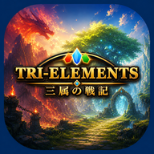
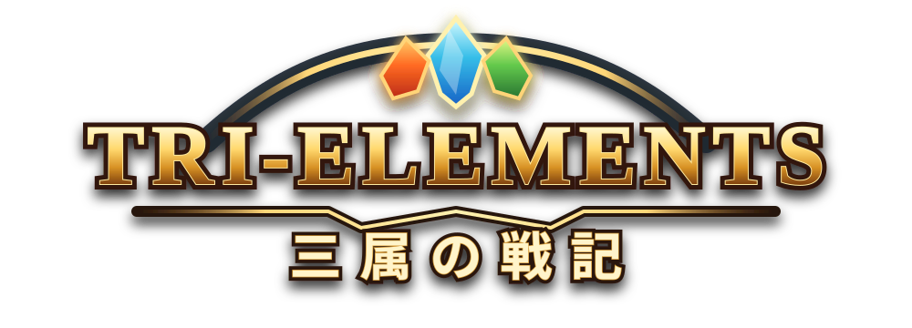
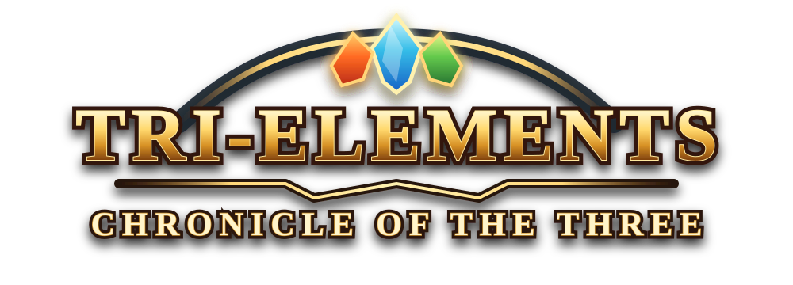
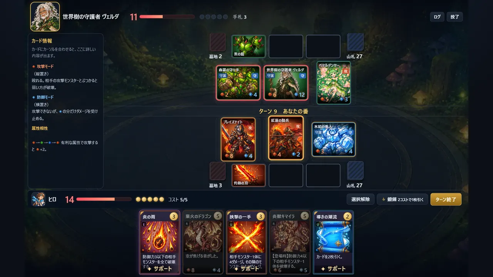
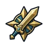
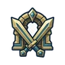
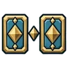
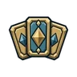
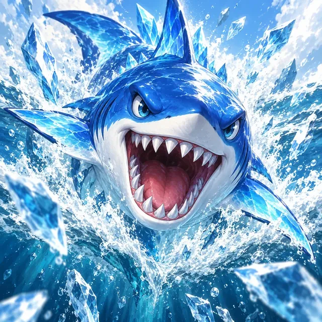
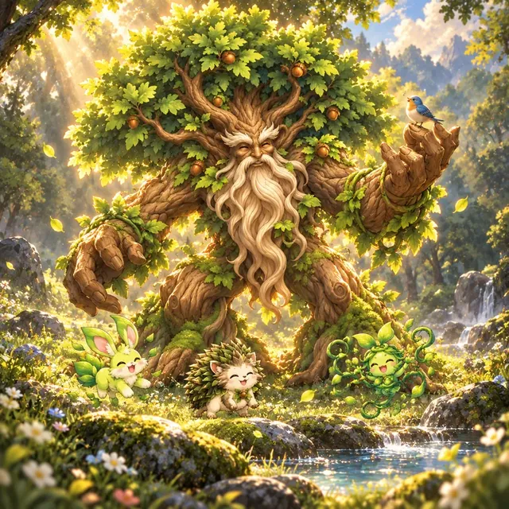

属性の相性Elements
有利な属性で攻撃すると、攻撃力+2。相手の色を見て、誰を出すか決めます。
Attack with the advantaged element for +2 ATK. Read the enemy's colors before you play.

TRI-ELEMENTS

炎は草に、草は水に、水は炎に強い。
三つの力で戦う、ブラウザで遊べる無料カードバトル。
Fire beats Grass. Grass beats Water. Water beats Fire.
A free card battle game, right in your browser.

有利な属性で攻撃すると、攻撃力+2。相手の色を見て、誰を出すか決めます。
Attack with the advantaged element for +2 ATK. Read the enemy's colors before you play.
モンスターは攻撃モードか防御モード。殴り合いで勝てない相手には、横に倒して受け止めます。
Every monster is in Attack or Defense Mode. Can't win the fight? Turn it sideways and absorb the hit.
場は3枠だけ。隣に誰がいるかで強さが変わるカードで、陣形を組み立てます。
Only three slots. Some cards grow stronger depending on who stands beside them — build your formation.
最初の対戦が、遊び方を教えてくれます。説明書は要りません。
The first battle teaches you how to play. No manual needed.

9つのエリア、27人のライバル。それぞれが自分のデッキと戦い方を持っています。勝つとパックがもらえます。
Nine lands, 27 rivals, each with their own deck and style. Win to earn card packs.

好きな相手と、3段階の難しさで。「極」で5回勝つと、そのキャラクターのカードが手に入ります。
Any rival, three difficulties. Beat one five times on Extreme to earn their character card.

2枚1組から1枚を選んでその場でデッキを組み、5人と連戦。持っていないカードも使えます。
Draft a deck from pairs on the spot and fight five rivals in a row — even with cards you don't own.
毎日、全員が同じカード・同じ相手。その日の最高点でランキング。水曜と土曜は特別ルールの日で、3位までに絵違いカードの景品。
Everyone gets the same cards and rivals each day. Compete on the ranking. Wednesdays and Saturdays are special rule days — the top 3 win an alternate-art card.
全182種のカードと、隠しキャラクターカード27種。デッキは8つまで保存できます。
182 cards plus 27 hidden character cards. Save up to eight decks.

進行は自動で保存され、バックアップも自動。ブラウザのデータを消しても、復元コードで元に戻せます。
Progress saves automatically and is backed up. Clear your browser by mistake? A recovery code brings it all back.
草原の見習いから、星の王座に座る者まで。誰もが自分のデッキで待っています。
From a meadow apprentice to the one on the star throne — every one of them waits with a deck of their own.
第1弾から第5弾まで、全182種。パックを開けて集め、30枚のデッキを組みます。
182 cards across five sets. Open packs, collect them, and build your 30-card deck.


背景まで描いた特別なイラストのカード。「今日の選定の儀」の特別ルールの日（水・土）に、ランキング3位までに入った人へ1枚ずつ。
Special full-illustration versions of familiar cards. Awarded to the top 3 of the Daily Rite on special rule days (Wed & Sat).
セーブは遊んだ場所ごとに別です。別の場所へ移るときは、設定→データの「引き継ぎコード」を使ってください。
Saves are separate per site. Use the transfer code in Settings → Data to move between them.
このゲームは、ひとりで作っています。「ここが難しかった」「このカードが好き」「ここが変」——ひとことで十分です。返事はできないことが多いですが、ぜんぶ読みます。
This game is made by one person. "This part was too hard", "I love this card", "this looks broken" — a single line is plenty. I may not be able to reply, but I read everything.